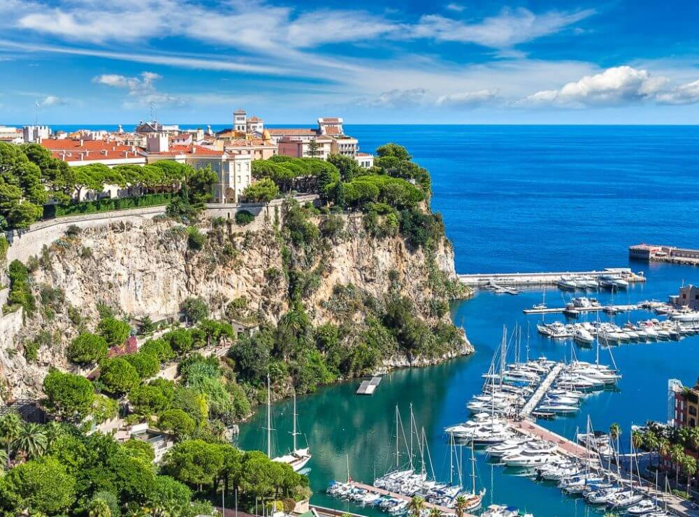

Mônaco, Mônaco
As paisagens de Mónaco caracterizam-se por um relevo acidentado e rochoso, com morros e colinas, e uma localização junto à costa do Mar Mediterrâneo. O país oferece vistas deslumbrantes do mar, vegetação luxuriante devido ao seu clima mediterrâneo, e o contraste entre o histórico Monaco-Ville (situado num rochedo) e o luxuoso Monte Carlo, com seus cassinos e hotéis. A paisagem de Mónaco é marcada por oposição entre o centro histórico e as áreas de luxo, complementada por jardins bem cuidados, praias e iates estacionados nas marinas.
- Terreno acidentado: Mónaco possui um relevo montanhoso com colinas e rochas.
- Costa mediterrânica: O país encontra-se na costa do Mediterrâneo, com águas azuis cristalinas.
- Clima mediterrânico: Verões quentes e secos e invernos amenos, propiciando uma vegetação luxuriante.
- Monaco-Ville (A Rocha): A cidade antiga, situada num promontório rochoso, com arquitetura medieval, ruas estreitas e vistas panorâmicas do mar.
- Monte Carlo: Conhecida pela sua opulência, lojas de luxo, hotéis emblemáticos e o famoso cassino, com belos parques e jardins.
- Larvotto: A zona costeira, com uma praia e um calçadão à beira-mar, ideal para relaxar e desfrutar da vista para o Mediterrâneo.
- Iates: Portos de marina cheios de iates de luxo complementam o cenário.
- Carros de luxo: Exibição de carrões que desfilam pelas ruas do principado.
- Fórmula 1: As ruas são famosas por sediar o Grande Prémio de Mónaco, o que contribui para a atmosfera vibrante do local.